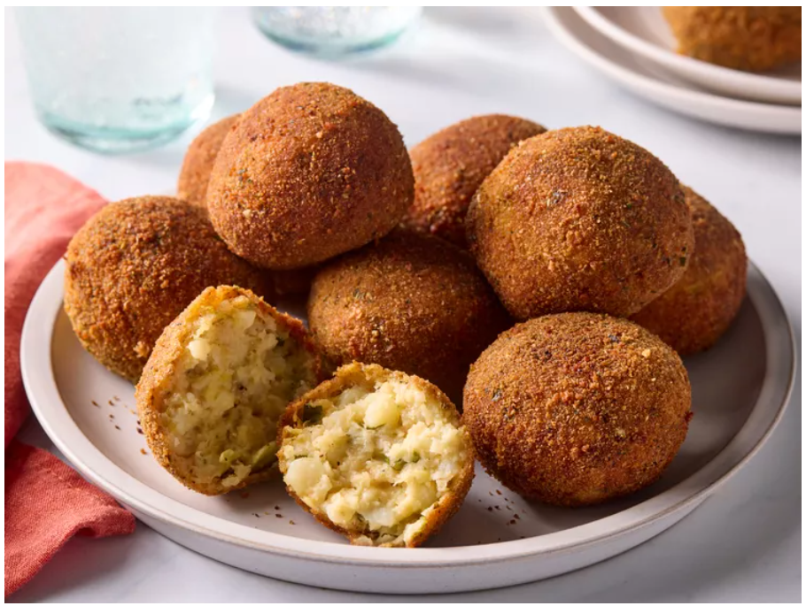

Odin Recipes
Home
Colcannon Balls

Description
Colcannon Balls are a delicious, bite-sized version of the classic Irish mash made with potatoes and cabbage or
kale. Lightly seasoned, rolled into balls, and coated in breadcrumbs, they’re fried or baked to golden
perfection—crispy on the outside, soft and creamy inside.
Perfect as an appetizer or party snack, colcannon balls are comforting, flavorful, and incredibly satisfying.
They pair wonderfully with dips like garlic mayo or mustard sauce and are sure to be a hit at any table. Let’s
make it!
Ingredients
- 3 large russet potatoes, peeled and cut into chunks
- 2 cups chopped green cabbage or kale
- 1/4 cup chopped green onions or leeks
- 1/4 cup chopped fresh parsley
- 3/4 teaspoon salt
- 1/4 teaspoon freshly ground black pepper
- 2 tablespoons butter
- 3/4 cup freshly grated Parmesan cheese
- 4 large eggs, divided
- 1 cup dried Italian bread crumbs, divided
- 2 tablespoons water
- 2 1/2 cups vegetable oil for deep frying
Steps
- Gather all ingredients.
- Place potatoes in a large saucepan and add enough water to just cover. Bring to a boil. Cover and cook until tender, about 15 minutes; drain.
- Meanwhile, cook cabbage in boiling water in a covered saucepan until tender, about 6 minutes; drain.
- Mash potatoes. Stir in onions and parsley and season with salt and pepper. Add butter and drained cabbage. Stir until butter is melted and mixture is well combined.
- Transfer mixture to a 10x15-inch baking pan and spread out evenly.
- Place pan in the refrigerator until mashed potatoes are fully cooled, about 1 hour.
- Combine cooled mashed potato mixture, Parmesan cheese, 1/4 cup breadcrumbs, and 2 eggs in a large bowl.
- For egg wash, whisk together remaining 2 eggs and water in a small bowl. Pour remaining 3/4 cup breadcrumbs in a shallow dish.
- Form mashed potato mixture into 16 balls (about 1/4 cup each), then dredge in egg wash followed by bread crumbs. Repeat dredging in egg wash and crumbs once more.
- Pour oil 1-inch deep in a large, heavy saucepan and heat over medium-high.
- Fry balls in the hot oil (350 to 365 degrees F or 175 to 185 degrees C ) in batches of 4, turning over until both sides are deep brown and an instant read thermometer inserted in the center reads 165 degrees F (74 degrees C), about 6 minutes. Place fried colcannon balls on a paper towel-lined baking sheet and hold warm in a 200 degree F (95 degrees C) oven. Serve hot.